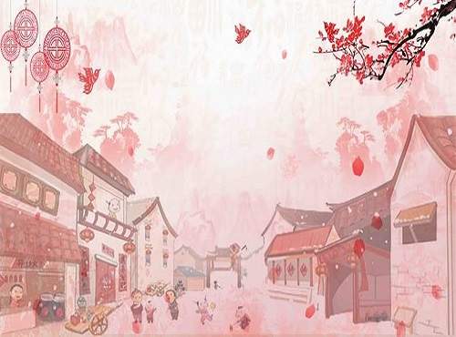
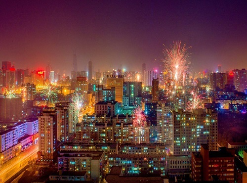
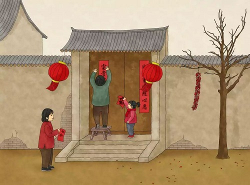
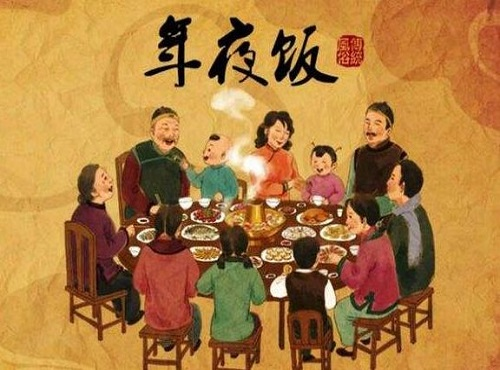
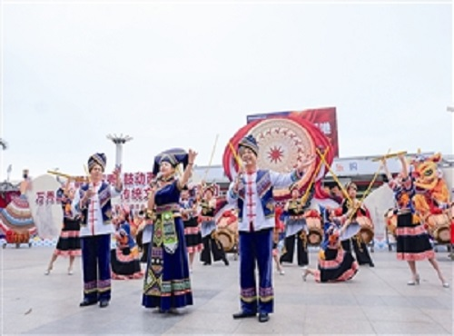
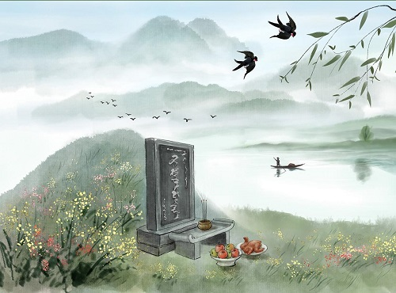
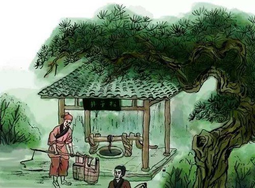
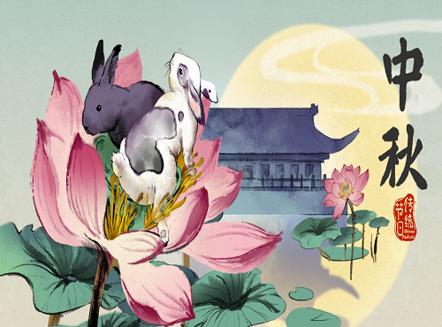
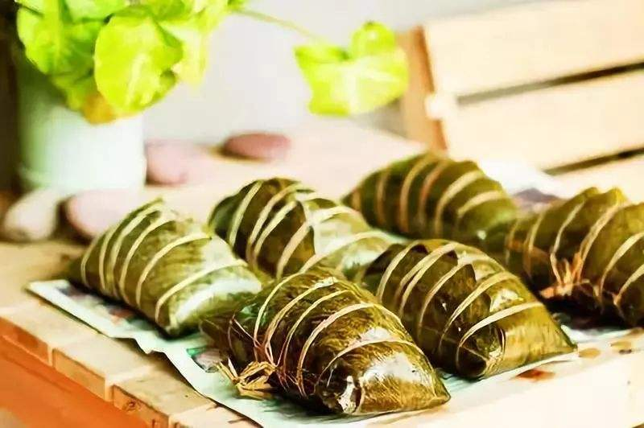

风俗文化 | 节日习俗
领略梧州的特色文化
-
除夕
人们都习惯在除夕之前，打扫家里卫生，去污除垢。除夕自古就有祭祖、守岁、团圆饭、贴年红、挂灯笼等习俗，流传至今，经久不息。除此之外，人们还习惯吃汤圆，放鞭炮和礼花迎接新年，那是一场视觉的盛宴。- 
- 
- 
- 
-
春节
大年初一，有的人会举办一些庆祝活动，比如：篮球赛，象棋比赛、竞猜活动、表演活动等等；有的人会和自己的家人或者朋友一起去外面逛逛。初二以后，有的人走亲戚，有的人走街串巷舞狮。舞狮是将杂技、武术、技巧、舞蹈等技术融于狮艺之中，把狮子的各种神态、形态表现得淋漓尽致、出神入化。
-
元宵节
元宵节主要有赏花灯、吃汤圆、猜灯谜、放烟花等一系列传统民俗活动。除此之外，还会有灯光秀观看。 -
三月三
人们会举行唱山歌，演粤剧，表演各种独居民族特色的活动。其中，长洲区最具特色。
-
清明
清明节是中华民族古老的节日，既是一个扫墓祭祖的肃穆节日，也是人们亲近自然、踏青游玩、享受春天乐趣的欢乐节日。我们还有弄“黑米饭”吃，它是用一种特别的树叶所浸泡出来的汁和大米作为原材料制作的，可甜可咸，美味之极。 -
端午
每年端午龙舟赛，梧州都会举办全长七公里的西江赛道，在滚滚西江水流中，十三支来自各县、市、乡的队伍精神抖擞，在涛涛的江水中奋力拼搏，力争上游。这是家乡的传统，这是梧州市民从小到大的传统，在长长的西江河畔，驻足了密密麻麻的市民，看龙舟，吃粽子，这是我们的美好记忆，也是展示新梧州精神"海纳百川，龙争上游"的体现！


-
七夕
拜七姐，祈福许愿、乞求巧艺、坐看牵牛织女星、祈祷姻缘、储七夕水等，是七夕节的传统习俗。我们在中午十二点左右，家家户户拿着瓶子或者其他容器水井存储七夕水。据说七月七储的这些七夕水无论保存多久都不会发臭，而且可以治百病。 -
中秋
吃月饼；拿一些糖果饼干等东西，在中秋晚摆出晒月亮；赏月；放孔明灯。每一个中秋在我们那里有人会自己弄孔明灯，弄两三个一两米左右高的。然后在中秋夜晚放，每当这个时候会聚集很多人去观看，过节氛围一度骤升。
我们那里有人自家弄月饼卖，口感松软，香气扑鼻，甚是好吃。
-
冬至
习惯包粽子吃。曾经还有这样一个说法：冬至大过年。 -
宝石节
宝石节是梧州特有的节日，时间在10月尾11月头，梧州市会放假。。在宝石节前后几天，会有各种活动举行，比较有意思的是美食嘉年华，各种各样的美食，任君挑选。
乡土文化 | 颇具特色
领略梧州的特色文化
-
龙母文化
西江水域“保护神”的赞歌
-
龙母文化，是西江文化的内核，是中华龙文化的源头之一，其流传之广、影响之大并不亚于海神妈祖
-
粤剧发源于广东佛山，在光绪年间传入梧州。在梧州有广泛的群众基础，拥有专业剧团，市群众艺术馆和各区文化馆及工会组织成立有业务粤剧团、队。这些剧团、队在重大节日和配合中心工作，到公共场所、下厂下乡演出，对活跃群众文化生活、推动中心工作有重要作用。
-
粤剧文化
又名广府大戏
-
梧州骑楼是一个富有文化内涵的人文景观，无论在历史文化、建筑文化还是商贸文化上都独具一格。它为打造梧州骑楼文化品牌，为梧州的跨越式发展注入了新的活力
-
打造宝石文化，就是通过发挥主观能动作用，树立“资源集约化、经营规模化、运作产业化、衔接链式化”的先进理念，将宝石产业的原料生产-加工-经营-展示-拍卖-进口等各个环节进行合并全面开发，形成国际一流的珠宝产业交流平台和及商贸、购物、展示、博览、旅游、观光、休闲为一体的工业文化产业。